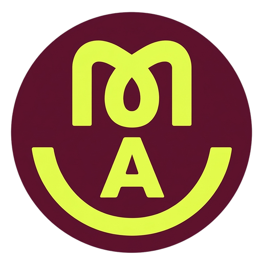
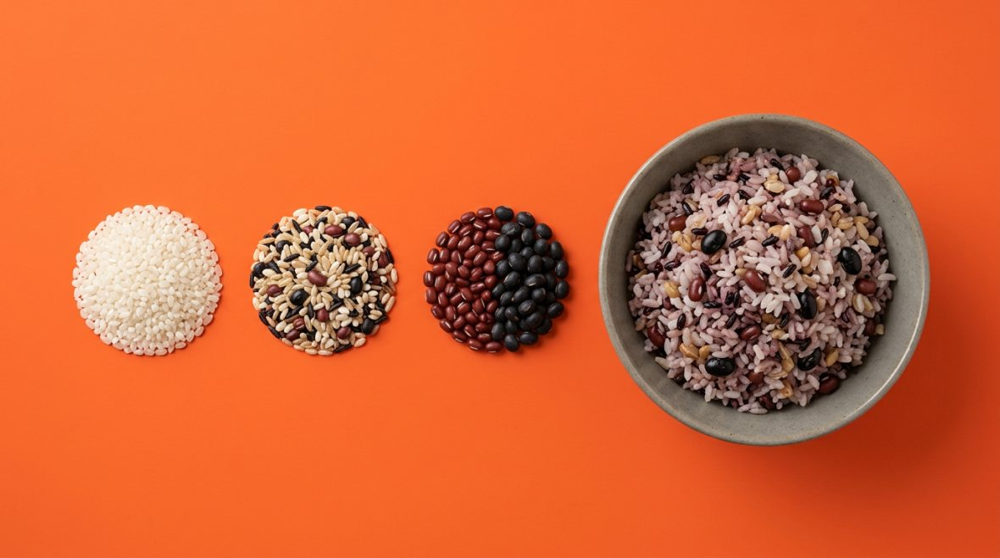
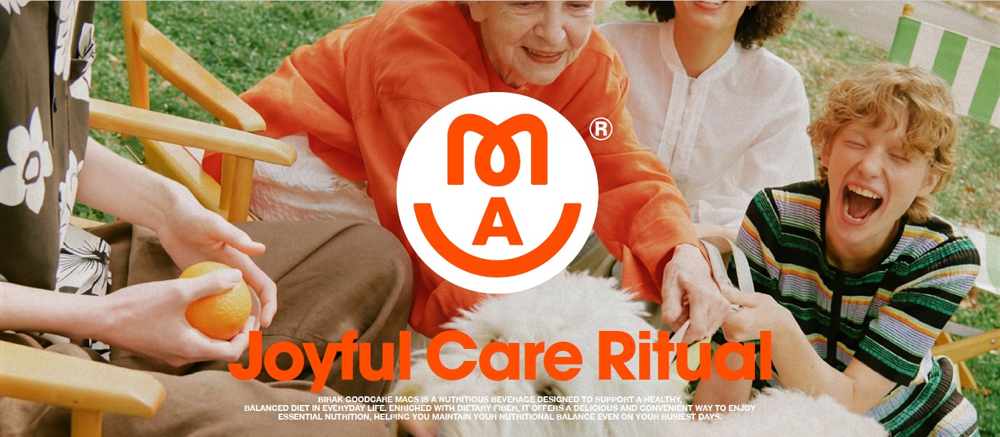
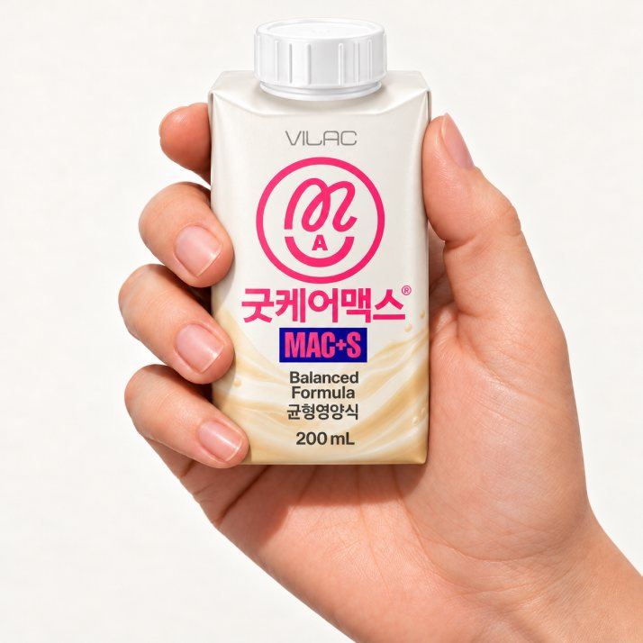
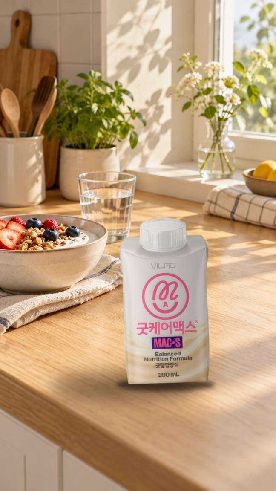
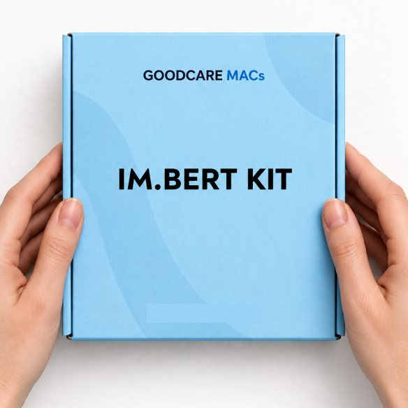
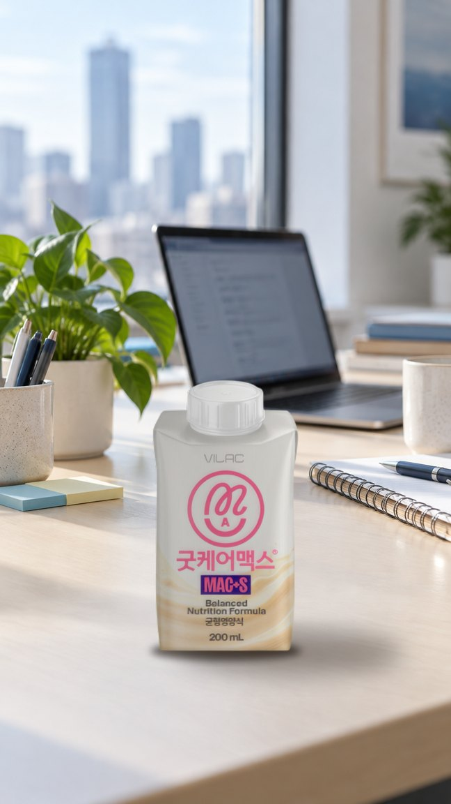
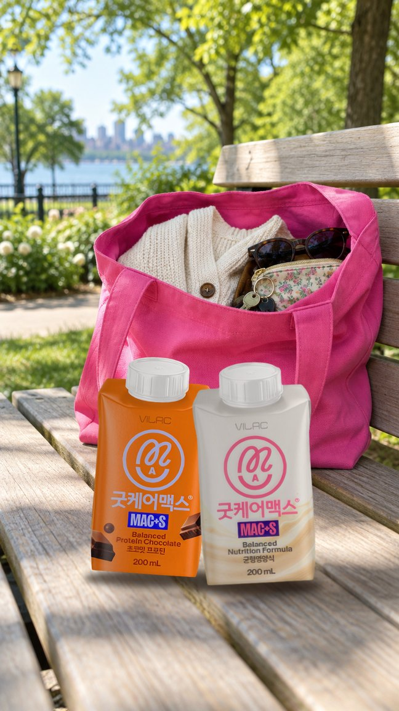
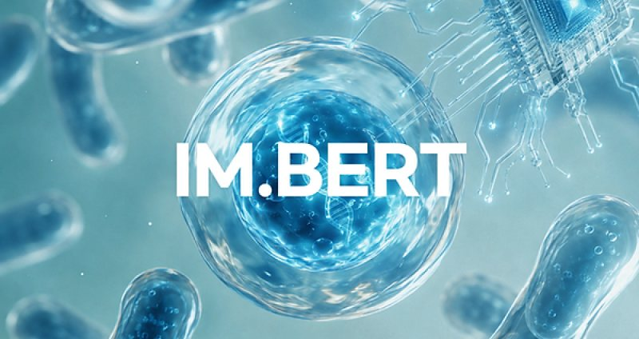

05우리의 약속우리가 말하는 것, 말하지 않는 것
우리가 말하는 것, 말하지 않는 것
원료에 대한 연구는 많지만, 원료의 연구 결과가 곧 제품의 효과는 아니에요.
그래서 굿케어맥스는 한 병에 무엇이 얼마나 들었는지를 정확히 알려드리는 데 집중해요. 식이섬유 12.5g, 사균체 100억 cells 이상, 락토프리. 확인되지 않은 효과는 약속하지 않을게요.

한 팩에 두 번의 영양, 굿케어맥스
한 팩에 두 번의 영양, 굿케어맥스.
오늘도 끼니는 챙겼는데,
미생물의 밥도 챙겼나요?
굿케어맥스는 내 몸을 위한 영양에
미생물의 먹이가 되는 MACs를 더했습니다.
다양한 식이섬유를 2:6:2 비율로 배합해
한 팩에 12.5g, 하루 기준치의 50%를 담았습니다.
*원물에 대한 설명 및 건강정보 입니다.
MAC은
사람은 소화하지 못하지만,
미생물은 먹을 수 있는 탄수화물이에요.
소화하지 못해요
맛있게 먹어요
*원물에 대한 설명 및 건강정보 입니다.
굿케어맥스는
나를 위한 균형영양에 미생물을 위한 MAC을 더해
한 팩으로 두 번의 영양을 챙겨요.
2 : 6 : 2는
단쇄 2 · 중쇄 6 · 장쇄 2,
3가지 길이를 섞어 든든하게 설계했어요.
*원물에 대한 설명 및 건강정보 입니다.

굿케어맥스만의
미생물까지 생각한 설계부터 근거 있는 원료,
하루 섭취 기준까지 꼼꼼하게 담았어요.
*원물에 대한 설명 및 건강정보 입니다.







내 몸을 위한 영양만으로는 부족하니까
굿케어맥스는 미생물의 밥까지 한 팩에 담습니다.
분석에서 설계까지 이어지는 흐름으로
한 사람에게 맞춘 이중영양을 만듭니다.
*원물에 대한 설명 및 건강정보 입니다.
검사 키트 수령부터 AI 리포트까지는 이뮤노바이옴이, 리포트를 바탕으로 한 이중영양 설계는 굿케어맥스가 맡습니다. 집에서 시작해 한 사람의 데이터로 끝까지 이어집니다.
한 병에 담긴 이야기를 소비자 눈높이에 맞춰 다섯 편의 짧은 글로 옮겼어요.
원료에 대한 연구는 많지만, 원료의 연구 결과가 곧 제품의 효과는 아니에요.
그래서 굿케어맥스는 한 병에 무엇이 얼마나 들었는지를 정확히 알려드리는 데 집중해요. 식이섬유 12.5g, 사균체 100억 cells 이상, 락토프리. 확인되지 않은 효과는 약속하지 않을게요.
굿케어맥스에는 열처리한 유산균, 사균체 EF-2001이 들어 있어요. 살아 있는 균이 아니어서 상온에서도 안정적이고, 고온 살균 공정을 거쳐도 영향이 적어요.
한 병에 사균체 100억 cells 이상을 담았고, 이 수치는 원료사의 시험성적서(COA)로 확인해요.
식이섬유를 많이 넣으면 텁텁해지거나 가라앉기 쉬워요. 치커리 이눌린은 약 3%일 때 가장 크리미한 식감을 내고, 프락토올리고당은 은은한 단맛을 더해요.
폴리덱스트로스는 열과 산에 강해 살균 과정을 거쳐도 안정적이고, 난소화성말토덱스트린은 맛이 없고 잘 녹아 가볍게 넘어가요. 여기에 오트와 그린바나나로 고소한 풍미를 더했어요.
식이섬유는 종류마다 발효되는 속도가 달라요. 이눌린과 올리고당은 빠르게, 구아검가수분해물은 완만하게, 폴리덱스트로스와 난소화성말토덱스트린은 천천히 발효돼요.
그래서 한 가지 원료를 많이 넣는 대신, 속도가 다른 다섯 가지를 고르게 섞어 12.5g을 채웠어요. 흰쌀·잡곡쌀·콩을 섞어 짓는 밥처럼요.
식이섬유는 사람의 소화효소로는 분해되지 않아요. 입과 위, 소장을 그대로 지나 대장까지 도착하고, 그곳에서 미생물이 먹을 수 있는 ‘밥’이 돼요.
굿케어맥스가 MAC을 ‘미생물의 밥’이라고 부르는 이유예요. 한 병에는 이런 식이섬유가 12.5g, 하루 영양성분 기준치(25g)의 절반만큼 들어 있어요.
칼럼 속 원료 이야기는 원료에 대한 일반적인 설명이며, 굿케어맥스 제품의 효능·효과를 뜻하지 않아요.
*원물에 대한 설명 및 건강정보 입니다.
끼니는 챙기는데, 정작 미생물의 밥은 잊기 쉬워요. 굿케어맥스가 한 병에 무엇을, 왜 담았는지 네 가지로 정리했어요.
식이섬유 하루 기준치는 25g이에요. 그런데 정제된 밥과 빵, 가공식품이 많은 요즘 식단으로는 이만큼 채우기가 쉽지 않아요. 미국 연구에서는 권장량을 채우는 사람이 10%도 안 된다고 보고했을 정도예요.
Buddington RK et al. Nutrients. 2017;9(12):1372.
MAC은 우리 몸은 소화하지 못하지만 장 속 미생물은 먹을 수 있는 탄수화물이에요. 평소 식이섬유를 적게 먹던 건강한 성인이 4주 동안 매일 이눌린을 챙겨 먹자, 장내 비피더스균 비율이 높아진 연구가 있어요.
Reimer RA et al. Am J Clin Nutr. 2020;111(6):1286-1296.
식이섬유는 사슬 길이에 따라 발효되는 속도가 달라요. 짧은 사슬은 빠르게, 긴 사슬은 천천히 발효돼서 장을 지나는 동안 시간차를 두고 여러 미생물의 밥이 돼요. 실제로 이눌린을 먹었을 때 장 속에서는 한두 균이 아니라 여러 미생물 그룹이 각자 다르게 반응했어요.
굿케어맥스는 한 가지를 많이 넣는 대신 단쇄 2 · 중쇄 6 · 장쇄 2로 섞어, 미생물 생태계 전체가 나눠 먹을 수 있게 설계했어요.
Vandeputte D et al. Gut. 2017;66(11):1968-1974.
MAC만 따로 챙기려면 번거롭고 값도 만만치 않아요. 그래서 굿케어맥스는 나를 위한 균형영양에 비타민·무기질을 갖추고, 여기에 미생물을 위한 MAC 12.5g(하루 기준치의 50%)과 사균체 100억 cells 이상을 더했어요. 한 끼를 챙기는 동시에 미생물의 밥까지 챙기는 거죠.
브랜드 페이지에서 소개한 네 가지를 조금 더 풀어 설명하고, 일상에서 바로 해 볼 수 있는 웰니스 라이프 팁을 함께 담았어요.
보통 균형영양식은 나에게 필요한 영양, 곧 탄수화물·단백질·지방과 비타민·무기질을 채우는 데 집중해요. 굿케어맥스는 여기에 미생물이 먹는 MAC을 한 팩에 함께 설계했어요. 한 번 마시면 나를 위한 한 끼와 미생물을 위한 한 끼가 동시에 채워져서 ‘이중영양’이에요.
MAC은 길이가 다른 식이섬유를 단쇄 2 · 중쇄 6 · 장쇄 2로 섞어, 한 팩에 12.5g(하루 기준치의 50%)을 담았어요.
끼니를 거르기 쉬운 시간을 먼저 찾아 보세요. 아침을 자주 건너뛴다면 전날 밤 한 팩을 눈에 잘 띄는 곳에 꺼내 두기만 해도, 나의 한 끼와 미생물의 밥을 함께 놓치지 않게 돼요.
사균체는 유익균을 열처리해 생명 활동을 멈춘 균체예요. 살아 있어야 하는 균이 아니라서 보관하고 유통하는 동안 균 수가 줄어들 걱정이 적고, 매일 마시는 음료에 담기 좋아요.
굿케어맥스에는 사균체 원료를 100억 cells 이상 담았어요.
좋은 습관은 이미 하는 일에 붙이면 오래가요. 양치 후, 출근 가방을 챙길 때처럼 매일 하는 행동 바로 다음을 ‘한 팩 마시는 시간’으로 정해 보세요.
국제 프로바이오틱스·프리바이오틱스 과학협회(ISAPP)는 포스트바이오틱스를 ‘몸에 이로움을 주는, 생명 활동이 없는 미생물이나 그 구성 성분’으로 정의해요. 사균체도, 유익균이 만들어 낸 성분도 여기에 속해요.
살아 있는 균인 프로바이오틱스, 균의 먹이인 프리바이오틱스와 MAC에 이어, 미생물 환경을 돌보는 또 하나의 축이라고 보면 쉬워요.
Salminen S et al. Nat Rev Gastroenterol Hepatol. 2021;18(9):649-667. doi:10.1038/s41575-021-00440-6
식탁에 익숙한 발효식품을 하루 한 가지 곁들여 보세요. 김치, 된장국, 플레인 요거트면 충분해요. 건강한 성인들이 10주 동안 발효식품을 늘려 먹은 무작위 연구에서 장내 미생물의 다양성이 높아졌어요.
Wastyk HC et al. Cell. 2021;184(16):4137-4153. doi:10.1016/j.cell.2021.06.019
좋은 원료를 넣는 것만큼 중요한 건 얼마나 먹느냐예요. MACs 지수는 유효성분을 하루에 얼마나 섭취하면 좋은지, 굿케어맥스가 스스로 정해 제시하는 일섭취량 기준이에요.
예를 들어 식이섬유는 하루 기준치 25g 가운데 절반인 12.5g을 한 팩으로 채우도록 맞췄어요. 매일 얼마나 챙겼는지 숫자로 가늠할 수 있게 하는 게 목표예요.
나머지 절반은 식탁에서 채워요. 흰쌀 대신 잡곡밥, 반찬 하나는 나물이나 해조류, 간식은 껍질째 먹는 과일이나 견과 한 줌. 식이섬유를 늘릴 땐 물도 함께 충분히 마셔 주세요.
답변에는 국제 학술지에 실린 사람 대상 연구에서 확인된 내용만 담았어요.
MAC은 우리 몸은 소화하지 못하지만, 미생물은 먹을 수 있는 탄수화물이에요. 위와 소장을 그대로 지나 대장까지 내려가면, 거기 사는 미생물들이 이걸 먹고 발효해요. 내가 먹는 한 끼 안에 미생물의 밥을 같이 챙겨 주는 셈이죠.
평소 식이섬유를 적게 먹는 건강한 성인 50명이 치커리 이눌린이 든 간식바를 4주간 먹은 연구에서는, 하루 7g 그룹의 장내 비피더스균 비율이 대조군보다 높아졌어요. 하루 3g 그룹도 정밀 분석(qPCR)에서 증가가 확인됐고요.
Reimer RA et al. Am J Clin Nutr. 2020;111(6):1286-1296. doi:10.1093/ajcn/nqaa074
네, 생각보다 콕 집어서 달라져요. 장 속 미생물 전체를 유전자 분석으로 훑어본 연구에서, 이눌린을 먹었을 때 꾸준히 변한 건 세 그룹이었어요. 비피더스균과 아나에로스티페스는 늘고, 빌로필라는 줄었죠.
미생물 전체 구성의 변화 폭은 크지 않았고, 대변 속 대사물질에도 유의한 변화는 없었다고 함께 보고됐어요. 장이 통째로 바뀌는 게 아니라, 특정 미생물들이 조용히 반응한다고 보는 게 정확해요.
Vandeputte D et al. Gut. 2017;66(11):1968-1974. doi:10.1136/gutjnl-2016-313271
미생물이 식이섬유를 발효하면 짧은사슬지방산이라는 물질이 생겨요. 그중 하나가 낙산(부티르산)인데, 이걸 만드는 미생물을 ‘낙산 생성균’이라고 불러요.
건강한 성인 10명이 구아검 가수분해물(PHGG)을 하루 6g씩 2주 동안 먹은 연구에서는, 비피더스균과 함께 낙산 생성균들, 그리고 낙산을 만드는 데 쓰이는 유전자의 양이 늘어난 게 확인됐어요.
Ohashi Y et al. Benef Microbes. 2015;6(4):451-455. doi:10.3920/BM2014.0118
프로바이오틱스는 미생물 자체를 넣어 주는 거예요. 프리바이오틱스는 특정 유익균이 골라 먹는 먹이 성분이고요.
MAC은 여기서 한 걸음 더 넓게, 여러 미생물이 실제로 먹을 수 있는 탄수화물 전체를 가리키는 말이에요. 미생물마다 잘 먹는 사슬 길이가 달라서, 굿케어맥스는 길이가 다른 식이섬유를 2:6:2로 섞었어요.
식이섬유 섭취가 부족한 건강한 성인 97명이 올리고프락토스를 4주 단위로 늘려 하루 15g까지 먹은 연구에서, 소리·압박감·통증·가스 같은 불편감은 섭취군과 위약군 모두 낮은 수준이었어요.
다만 사람마다 미생물이 달라서 처음 며칠은 가스가 조금 늘 수 있어요. 처음엔 천천히, 몸이 익숙해지면 꾸준히 드시는 걸 권해요.
Buddington RK et al. Nutrients. 2017;9(12):1372. doi:10.3390/nu9121372
위 연구들에서 사용한 양은 하루 3g에서 15g 사이였어요. 굿케어맥스 한 병에는 식이섬유가 12.5g 들어 있어서, 하루 영양성분 기준치(25g)의 절반을 한 번에 채울 수 있어요.
장 속 미생물의 변화는 먹는 동안 서서히 나타나요. 지금까지 소개한 연구들도 짧게는 2주, 길게는 3개월 동안 매일 먹으며 변화를 지켜봤어요.
건강한 성인 44명이 PHGG를 하루 5g씩 12주 동안 먹은 이중맹검 연구에서는, 위약 그룹과 달리 장내 비피더스균 비율이 유의하게 늘었어요.
Yasukawa Z et al. Nutrients. 2019;11(9):2170. doi:10.3390/nu11092170
장 속 미생물에게는 한 가지를 많이보다 여러 가지를 골고루가 더 반가워요. 1만 명 넘는 사람의 장내 미생물을 분석한 연구에서, 일주일에 30가지 이상의 식물성 식품을 먹은 사람들은 10가지 이하를 먹은 사람들보다 장내 미생물이 더 다양했어요.
식이섬유를 갑자기 많이 늘리기보다 며칠에 걸쳐 천천히 늘리고, 물도 충분히 함께 드세요. 나를 위한 한 끼, 미생물을 위한 한 끼. 오늘 한 병으로 시작해 보세요.
McDonald D et al. American Gut: an Open Platform for Citizen Science Microbiome Research. mSystems. 2018;3(3):e00031-18.
소개한 연구는 이눌린·올리고프락토스·구아검 가수분해물 등 원료 단독 또는 일반 식생활에 대한 연구이며, 굿케어맥스 제품으로 수행한 시험 결과가 아니에요. 이 제품은 질병의 예방 및 치료를 위한 의약품이 아닙니다.
*원물에 대한 설명 및 건강정보 입니다.
평일 09:00~18:00 · 점심 12:00~13:00
K카카오톡 상담채널 추가하고 바로 문의 ✎1:1 문의 남기기답변은 알림톡·이메일로 BIM.BERT 맞춤 상담 신청장내 미생물 검사 · 1:1 설계 ☎고객센터 전화[000-0000-0000]